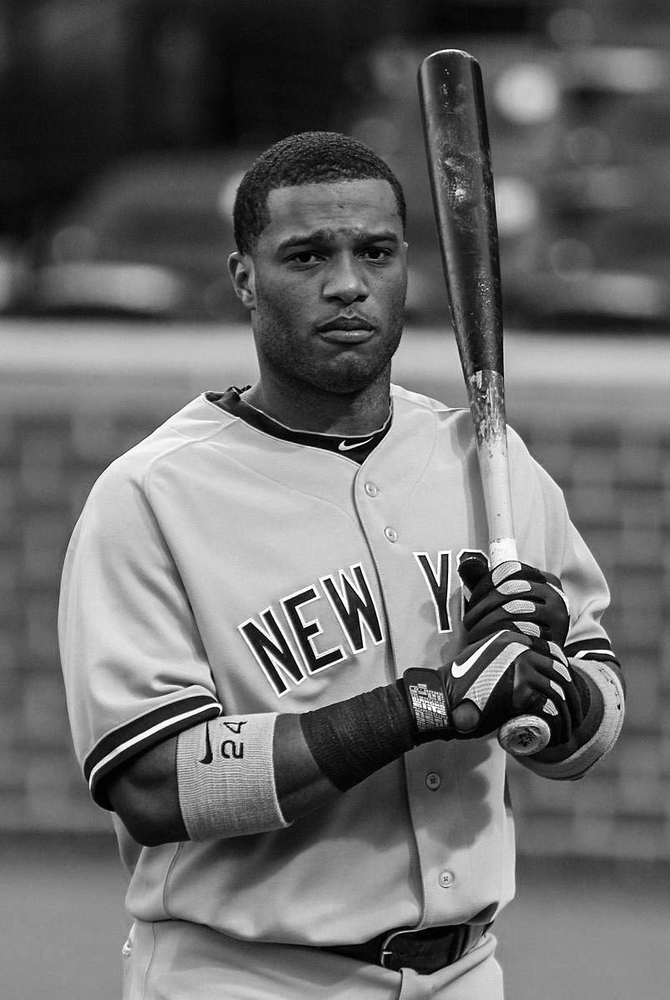

The new Yankee Stadium, which cost a record $1.5 billion, was constructed near the old facility. As built, it had a capacity of approximately 52,000, with 52 luxury suites. Monument Park, which holds plaques and monuments honoring former Yankees personnel, was built beyond the center field fence; its collection was transplanted from the old stadium.[279] For the 2009 season, the team committed over $400 million in future salaries to three free agents: pitchers CC Sabathia and A. J. Burnett, and first baseman Mark Teixeira. New York won 90 of its last 134 games, and broke the franchise single-season record by hitting 244 home runs. Another club record was broken by Jeter, who passed Gehrig as the Yankees' all-time hits leader on September 11. New York posted 103 wins in 2009 and beat out the Red Sox for the division title by eight games. In the AL playoffs, the Yankees defeated the Twins in the ALDS and the Angels in the ALCS, advancing to the World Series. There, they faced the defending Series champions, the Philadelphia Phillies. Behind a six-RBI effort by Matsui in the sixth and final game, the Yankees defeated the Phillies to win their record 27th Series championship.
George Steinbrenner died in July 2010. The Yankees won the league's wild card berth, but their title defense was ended by the Texas Rangers in the ALCS. Multiple Yankees players set individual marks in 2011. Jeter joined the 3,000 hit club on July 9; he was the first player to do so while playing for the club. Later in the season, Rivera posted the 602nd save of his career, breaking the all-time record that had been held by Trevor Hoffman. The Yankees won the AL East, but lost in the ALDS to the Tigers. Rivera suffered a season-ending injury to his right knee in May 2012 while catching fly balls before a game against the Royals. Even without their longtime closer, the 2012 Yankees gained a 10-game lead by mid-July, and held off the Orioles to win the division title by a final margin of two games. After defeating the Orioles in a five-game ALDS, the Yankees were swept by the Tigers in the ALCS.
During Game 1 of the 2012 ALCS, Jeter broke his right ankle while attempting to field a ball. He was one of many Yankees to miss playing time during the club's 2013 campaign; 20 players were placed on the disabled list at least once. The team had an opportunity to win a wild-card playoff spot, but faded late in the season. It was only the second time since 1995 that New York did not qualify for postseason play. In the offseason, second baseman Robinson Canó departed New York for the Mariners in free agency, but the Yankees signed starting pitcher Masahiro Tanaka, who was coming off a 24–0 year with Japan's Tohoku Rakuten Golden Eagles, to a seven-year contract. Rodriguez was suspended for the 2014 season by MLB for using performance-enhancing drugs. The 2014 Yankees, the last with Jeter in their lineup, fell four games short of a postseason berth with an 84–78 record. Despite signing several new hitters prior to the season, the team finished third from last in the AL in runs scored. The offense improved in 2015, ending the regular season with the second-most runs in MLB. New York gained a wild card berth with a second-place finish, but was defeated by the Houston Astros in a one-game playoff. The Yankees traded several veteran players during their 2016 season and received Gleyber Torres, Clint Frazier, and Justus Sheffield, among others, in return. In August 2016, Rodriguez was released from his contract. The club had 84 wins, but missed the playoffs for the third time in four years. As the Yankees' on-field performance declined after 2009, their attendance and television ratings fell; revenue from ticket and luxury suite sales at Yankee Stadium decreased by more than 40 percent from 2009 to 2016.